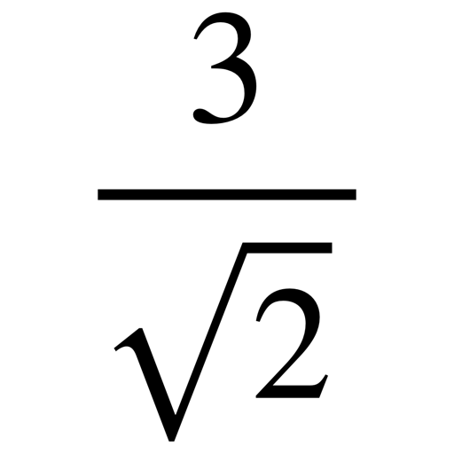

| Operation | Result | LaTeX code |
|---|---|---|
| Greater or equal | |
\ge |
| Greater | |
> |
| Less or equal | |
\le |
| Less | |
< |
| Dot product | |
A \cdot B |
| Fraction | |
\frac{A}{B} |
| Brackets | |
\left( A \right) |
| Powers | |
2^4 |
| Power with brackets | |
\left( a^n \right)^m |
| Square root | |
\sqrt {2} |
| Index | |
a_n |
| Radical sign | |
\sqrt[4]{8} |
| Root of a fraction | |
\sqrt{\frac{4}{25}} |
| Fraction with a root |  | \frac{3}{\sqrt{2}} |